Format Container Into String.vi¶
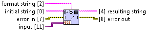Converts input data into a human-readable string according the the format string. Input data can be of any type, except for those few which are not supported by Container To String.vi.
- format string (Input, String)
- Optional string that specifies how to create resulting string.
- initial string (Input, String)
- String to be prepended to the resulting string.
- error in (Input, Error Cluster)
- This input provides standard error in functionality.
- input (Input, Variant)
- Data to be formated into string.
- resulting string (Output, String)
- String representing input data, build based on format string.
- error out (Output, Error Cluster)
- This output provides standard error out functionality.
Theory of Operation¶
Following two types of formating are available:
Explicite - data item has corresponding placeholder which specifies how value is to be converted into string. This is available only for LabVIEW built-in scalar types. Standard placeholders like
%f,%detc can be used. For more information read here.- Implicite - available for all data types that are supported by Container To String.vi. It can be achieved in two ways:
- Default - by not providing format string at all. Data needs to be casted (manually or automatically) to Variant type and provided to the input of the VI. This will have the same effect as using Container To String.vi.
- Custom - by casting data to Variant twice and applying
%splaceholder. The same formating as above will be used. However here, additional text can be prepended or appended.
Additional rules apply to the containers (arrays and clusters). Each element of the container is considered separately and formated either explicitely or implicitely. Multidimentional arrays are first converted to single dimention. Clusters cannot be linearized like this. They are processed element-wise, non-recursively.
Number of elements and placeholders doesn’t have to be the same. If number of elements is greater than number of placeholders, the last elements will be discarded. If number of elements is smaller than number of placeholders, the last placeholders will be discarded.
Scalars¶
| Code | Result | Comment |
|---|---|---|
| 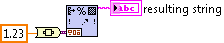 | 1.230000 | Implicite default formatting. Built-in type, scalar. Data casted to Variant manually. |
| 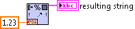 | 1.230000 | Implicite default formatting. Built-in type, scalar. Data casted to Variant automatically. |
| 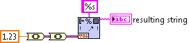 | 1.230000 | Implicite custom formatting. Built-in type, scalar. Note that data has ben casted to Variant twice. |
| 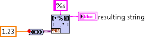 | 1.230000 | Implicite custom formatting. Built-in type, scalar. The same as above, but double casting has been performed by To Nested Variant.vi. |
| 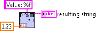 | Value: 1.230000 | Explicite formatting. Built-in type, scalar. Simple case. |
| 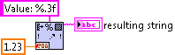 | Value: 1.230 | Explicite formatting. Built-in type, scalar. A bit more advanced than above. |
| 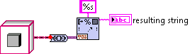 | LabVIEW Object | Implicite custom formatting. Instance of the class. |
| 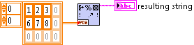 | [[1.000000, 2.000000, 3.000000], [6.000000, 7.000000, 8.000000]] | Implicite default formatting. Array. |
Special Cases¶
| Code | Result | Comment |
|---|---|---|
| 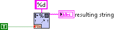 | 1 | Natively, LabVIEW can convert boolean values as they were decimal... |
| 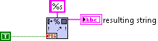 | TRUE | ...or as they were stirngs. This returns names of the values in upper case though. |
| 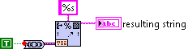 | True | If we want to be Python-compatible, we need CamelCase. This can be achieved by using implicite custom formatting. |
| 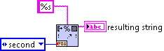 | second | Enums can be converted by using names of the constants... 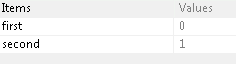 |
| 1 | ...or by using values of the constants. | |
| 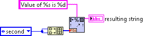 | Value of second is 1 | The same constant is dispayed twice. Once as a name and then as a value. |
| 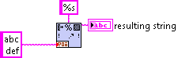 | abc def |
s placeholder is the one which natively goes together with string data type. This is why it returns input data as it is. This case can be clasified as explicite formatting. |
| 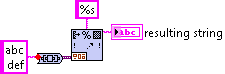 | 'abc\ndef' | If we want to be compatible wiht Python repr function, string data type needs to be provided in a variant. This results in implicite custom formatting. |
| 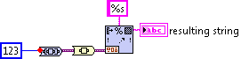 | non-printable | In cases when we need Variant type to be flattened into string, triple casting is necessary. |
Containers¶
| Code | Result | Comment |
|---|---|---|
| 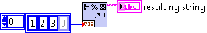 | [1, 2, 3] | Implicite defaut formatting of homogenous array. |
| 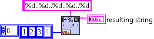 | 1..2..3.. | Element-wise explicite formatting of homogenous array. Note that spare placeholders have been discarded. |
| 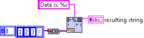 | Data is: [1, 2, 3] | Implicite custom formatting of homogenous array with a string preceding data. |
| 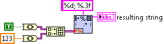 | 1; 123.000 | Element-wise explicite formatting of heterogeneous array. Note that each element has been manually casted to Variant. |
| 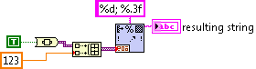 | 1; 123.000 | The same as above, but only the first element has been casted to Variant manually. Remaining elements can be casted automatically. |
| 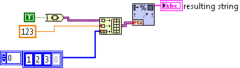 | [True, 123.000000, 1, 2, 3] | Implicite defaut formatting of heterogeneous array. Note that Build Array function concatenates inputs. Elements of input array are one by one casted to Variants. |
| 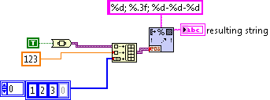 | 1; 123.000; 1-2-3 | Element-wise explicite formatting of heterogeneous array. Note that Build Array function concatenates inputs. Elements of input array are one by one casted to Variants. |
| 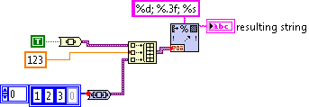 | 1; 123.000; [1, 2, 3] | Element-wise mixed formatting of heterogeneous array. Input array has been casted to Variants twice, which makes Build Array function consider it as a single element. First two elements of resulting array have been formated explicitely. The last element has been formated using implicite custom formatting. |
| 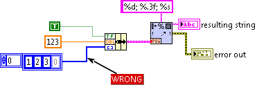 | unspecified | In contrast to arrays which can be concatenated, clusters cannot be linearized. This means that clusters that contain other containers cannot be formatted element-wise... |
| 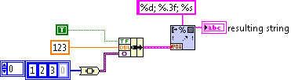 | 1; 123.000; [1, 2, 3] | ...until containers are casted to Variant type for further implicite custom formatting. |
| 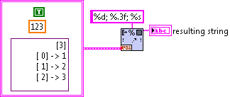 | 1; 123.000; [1, 2, 3] | Naturally, the same data as above can be placed in code as a constant, without using Bundle function. |